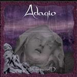

| Artist: | Adagio |
| Title: | Underworld |
| Label: | Nothing To Say |
| Length(s): | 63 minutes |
| Year(s) of release: | 2003 |
| Month of review: | [11/2003] |
| 1) | Next Profundis | 7.39 |
| 2) | Introitus/Solvet Saeclum In Favilla | 8.14 |
| 3) | Chosen | 7.52 |
| 4) | From My Sleep... To Someone Else | 6.37 |
| 5) | Underworld | 13.25 |
| 6) | Promises | 5.03 |
| 7) | The Mirror Stage | 6.31 |
| 8) | Niflheim | 8.09 |
Chosen is again pacey bombastic symphonic metal, with typical hardrock/metal vocals (you may compare them with those of Russell Allen of Symphony X) and romantic classical interludes and just a hint of baroque.
From My Sleep... To Someone Else opens with sprinkles of piano, somewhat neo-classical even. Then the rhythm guitars set in and we are back in metal territory. A church organ also plays, and this gets to be quite heavy, also because of the presence of the vocals of guest vocalist RMS Hreimarr, singer of a death metal band. The convincing chorus is quite catchy again. Plenty of violins in the back make for a very symphonic feel. Very accessible in places, but in my mind the best song so far, the Malmsteenian guitar solo notwithstanding.
The title track Underworld is by far the longest. The opening is entirely orchestrated and good stuff at that. I mean it has all been done before (although maybe not on this type of album), but I do like it a lot. Then the guitar sets in, and the music becomes quite tense, especially when the slightly dissonant piano runs set in as well. The power metal vocals only set in after more than four minutes. The remainder of the song is also rich in orchestration, but the focal point is the strong memorable vocal chorus. After two such choruses the music becomes moody and sparse with a melancholy piano after wards building up again with violins. The melodic changeover into something Arabic styled is next, here the rhythm guitars and soloing keyboards take over for some progmetal. The ending has sweeping orchestral bombast.
Promises is a sugary ballad, in the line of Malmsteens Dreaming with plenty of romantic violins. It never gets rowdy, the ending is in fact very subdued. The Mirror Stage is something quite different again with complex keyboard soloing. The rhythm guitar has strong prominence and this song is with its meandering keyboards certainly not the most accessible. The growling of the guest 'vocalist' is restricted to the final minute.
Niflheim is the closer opening with bombastic drums and violins. This is in fact a flashy instrumental with a continuous string of power rich instrumental passages and of course the necessary and filmic orchestral parts. The melodies have a certain Middle-eastern ring to them.